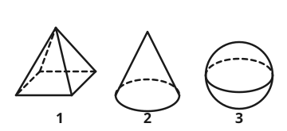

Schrägbilder von Pyramide und Kegel
Mit einem KI-Tutor lernen
Ein KI-Tutor erklärt dir diese Seite und hilft dir bei den Aufgaben. Wähl deinen Assistenten:
Mit Claude öffnen Mit ChatGPT öffnen Mit Mistral Vibe öffnen
Du nutzt dein eigenes Konto beim Anbieter. Der Assistent ist kein Angebot von lernapps.net: lernapps liefert nur Inhalte und Aufgaben. Die Wahl gilt für alle Seiten, nur auf diesem Gerät.
Die Spitze finden
Wenn du ein Haus mit Spitzdach zeichnen willst, brauchst du die Spitze an der richtigen Stelle. Prisma und Zylinder zeichnest du schon als Schrägbild. Nach dieser Seite zeichnest du Pyramide und Kegel. Das Wichtigste ist die Spitze. Schau dir im Bild die Pyramide an.

© CC-BY-4.0Pyramide, Kegel und Kugel im Schrägbild. Körper 1 ist die Pyramide.
Aufgabe
Lösung
Richtige Antwort: 3
Die Pyramide hat acht Kanten. Drei davon liegen hinten und sind von vorn verdeckt: zwei in der Grundfläche und eine zur Spitze.
Über der Mitte
Wenn du eine Pyramide oder einen Kegel zeichnest, kommt es auf die Spitze an. Du zeichnest die Grundfläche wie beim Quader: vorn in wahrer Größe, die Tiefe schräg und halbiert. Die Spitze einer geraden Pyramide liegt senkrecht über der Mitte der Grundfläche. Gerade heißt hier: Die Pyramide steht nicht schief. Die Mitte findest du dort, wo sich die beiden Diagonalen der Grundfläche schneiden. Beim Kegel liegt die Spitze senkrecht über dem Mittelpunkt der Grundfläche. Die Grundfläche zeichnest du als Ellipse, wie beim Zylinder.
Ein Kegel mit Radius 2 cm und Höhe 3 cm
Die Ellipse ist 8 Kästchen breit und 4 Kästchen hoch. Die Spitze liegt 3 cm hoch, das sind 6 Kästchen, senkrecht über dem Mittelpunkt der Ellipse. Dann verbindest du die Spitze mit den beiden Rändern der Ellipse.
Übung
Aufgabe
Drei Beispielaufgaben, jede mit ihrer Lösung:
Aufgabe Nr. 1
Auf Kästchenpapier ist 1 Kästchen 0,5 cm lang. 1 cm sind 2 Kästchen. Die Pyramide ist 5 cm hoch. Wie viele Kästchen hoch zeichnest du sie senkrecht von der Mitte der Grundfläche zur Spitze?
Tipp
Die Höhe verläuft senkrecht, also in wahrer Länge. Ein Kästchen ist 0,5 cm lang.
Lösung
- Die Höhe zeichnest du in wahrer Länge, 1 cm sind 2 Kästchen: 2 · 5 = 10 Kästchen.
Richtige Antwort: 10
Aufgabe Nr. 2
Auf Kästchenpapier ist 1 Kästchen 0,5 cm lang. 1 cm sind 2 Kästchen. Die Pyramide ist 2 cm hoch. Wie viele Kästchen hoch zeichnest du sie senkrecht von der Mitte der Grundfläche zur Spitze?
Tipp
Die Höhe verläuft senkrecht, also in wahrer Länge. Ein Kästchen ist 0,5 cm lang.
Lösung
- Die Höhe zeichnest du in wahrer Länge, 1 cm sind 2 Kästchen: 2 · 2 = 4 Kästchen.
Richtige Antwort: 4
Aufgabe Nr. 3
Auf Kästchenpapier ist 1 Kästchen 0,5 cm lang. 1 cm sind 2 Kästchen. Die Pyramide ist 3 cm hoch. Wie viele Kästchen hoch zeichnest du sie senkrecht von der Mitte der Grundfläche zur Spitze?
Tipp
Die Höhe verläuft senkrecht, also in wahrer Länge. Ein Kästchen ist 0,5 cm lang.
Lösung
- Die Höhe zeichnest du in wahrer Länge, 1 cm sind 2 Kästchen: 2 · 3 = 6 Kästchen.
Richtige Antwort: 6
Aufgabe Nr. 1
Aufgabe Nr. 1
Auf Kästchenpapier ist 1 Kästchen 0,5 cm lang. 1 cm sind 2 Kästchen. Zeichne das Schrägbild eines Kegels mit dem Radius 2 cm und der Höhe 2 cm. Die Ellipse der Grundfläche ist schon da. Wie viele Kästchen liegt die Spitze rechts und oberhalb des Mittelpunkts der Ellipse?
Lösung
0 Kästchen nach rechts, 4 Kästchen nach oben
Aufgabe Nr. 1
Aufgabe Nr. 1
Auf Kästchenpapier ist 1 Kästchen 0,5 cm lang. Waagerechte und senkrechte Kanten zeichnest du in wahrer Länge, Tiefenkanten schräg und mit halb so vielen Kästchen. Zeichne das Schrägbild einer Pyramide. Die Grundfläche ist ein Rechteck, vorn 3 cm breit (6 Kästchen) und 4 cm tief. Die Pyramide ist 3 cm hoch. Die Grundfläche ist schon da. Wie viele Kästchen liegt die Spitze rechts und oberhalb der vorderen linken Ecke?
Lösung
5 Kästchen nach rechts, 8 Kästchen nach oben
Aufgabe
Lösung
Richtige Antwort: Die Aussage stimmt.
Eine gerade Pyramide steht gerade. Ihre Spitze liegt über dem Punkt, an dem sich die Diagonalen der Grundfläche schneiden.
Fehler gefunden oder eine Idee für diese App?